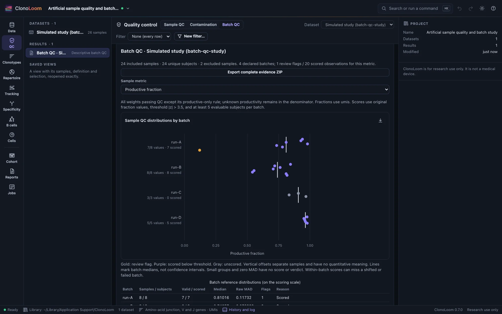
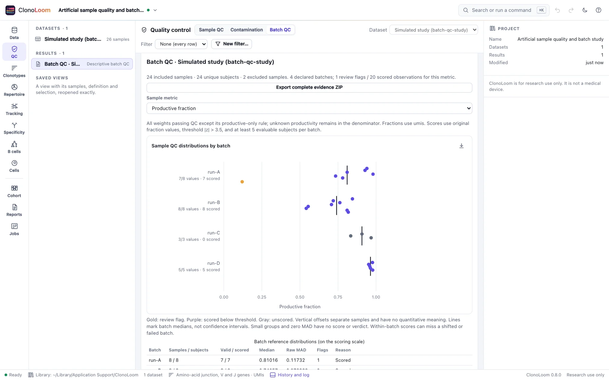

Batch QC
Inspect sample metrics, reference distributions and unavailable evidence. A review flag is a reason to investigate; it never removes a sample or corrects a batch.
Declare comparable observations
- Open one receptor dataset with known count units and choose its QC filter.
- Open QC → Batch QC. Expand Assign samples and scoring policy.
- Give every included sample a subject and batch. Enter a reason for each excluded sample. Include at most one sample per subject within a batch; do not silently pool technical replicates.
- Choose the absolute modified-z threshold and minimum evaluable subjects, then select Screen batch QC.
A subject can appear in different batches; the result reports samples and unique subjects separately. These summaries are not independent batch comparisons. Missing batch or subject labels require an explicit exclusion. Use batch labels that represent comparable experimental conditions; the software cannot establish that a grouping is scientifically appropriate.
Read distributions before flags


Each point is one sample. All batches share the same horizontal metric scale; vertical offsets only separate marks. Lines mark medians, not confidence intervals. Gold means a review flag, purple means a scored value below threshold, and gray means unscored. Every value remains in the tables and exports, including missing values with reasons. Marks can overlap.
Choose retained abundance, retained rows, productive fraction, unknown productivity fraction or resolved V/J-gene fractions. Positive abundance and row counts use explicitly labeled log10 values without pseudocounts. Fractions stay on a 0–1 scale. A systematically shifted or poor batch may have no within-batch flags: inspect all distributions and experimental context.
Know what was counted
Bulk fractions use known integer read, UMI or template counts; single-cell fractions use contigs. Single-cell retained abundance counts distinct nonempty barcodes, not contigs. Neither cells nor contigs count as independent observations in the robust-score reference.
Productive and unknown-productivity fractions use all weights passing QC except its productive-only rule. Unknown flags remain in that denominator. Resolved-gene fractions use all retained explicitly productive weights, including rows missing junctions or genes. Raw numerator/denominator pairs, retained rows and QC exclusions are saved. The active clonotype definition is not used or changed.
Missing or invalid contributing counts make the affected metric unavailable; they never become zero or one. Missing barcodes make cell abundance unavailable. A zero denominator is unavailable; a true zero with a positive denominator remains zero. Nonpositive log values are retained in tables but cannot be scored on the log scale.
Understand the scoring policy
The score is 0.6745 × (value − batch median) / raw MAD, where MAD is the median absolute deviation on the scoring scale. The observation is included in its batch reference. By default, absolute scores strictly greater than 3.5 are flagged in either direction.
At least five evaluable subjects per batch and metric are required; you can raise this minimum. Smaller groups and groups with zero MAD remain unscored. No tiny denominator, pooled-batch fallback or automatic deletion is used. These are descriptive review choices, not p-values, calibrated error rates, proof of poor quality or a power guarantee. Biological heterogeneity, confounding and masking can affect the results.
Try the controlled example
Open Batch quality-control study from Examples. The generating assignments and exclusions are in truth/samples.json. The four included batches have 8, 8, 3 and 5 subjects. Run C is too small for scores, and run D has zero MAD for retained rows. One run-A sample has a missing count; another has deliberately low productivity. Counts and sample sizes vary, and all 2427 generating rows are retained in the truth files.
Save and reproduce
Saved results reopen and replay without source files. Export complete evidence ZIP includes JSON, manifest, all sample evidence, every included sample × metric observation and provider notices. Exclusions remain explicit in JSON; unscored CSV flags are blank. Subject identifiers remain present. Figure exports include methods and citations. Remote clients use screen_batch_qc.
The bounded screen accepts 2–256 source samples and at most 32 included batches. Larger requests are refused rather than truncated.
Scientific sources
- Iglewicz and Hoaglin (1993), How to Detect and Handle Outliers; the formula and labeling rule are documented in the NIST/SEMATECH e-Handbook.
- OSCA Advanced: Quality control, redux, for reference-distribution and batch-QC limitations. ClonoLoom's sample-level metric and scoring policies are its own declared implementation.